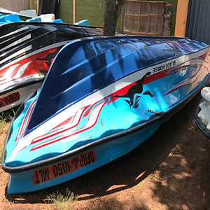
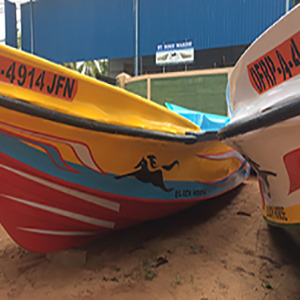

18' - 6" Boat
Length (18' - 06")
Breath (05' - 01")
Depth (02' - 08")
Design Draught (00' - 05")

19' - 6" Boat
Length (19' - 06")
Breath (06' - 01")
Depth (02' - 08")
Design Draught (00' - 05")

19' - 0" Boat
Length (19' - 00")
Breath (06' - 04")
Depth (02' - 07")
Design Draught (00' - 05")